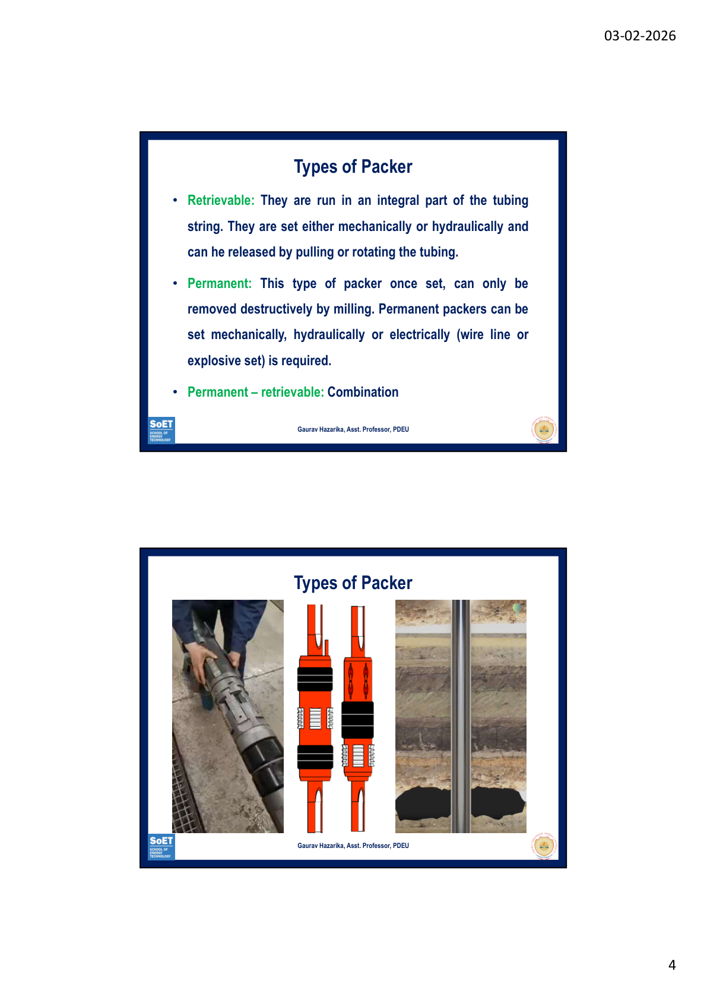
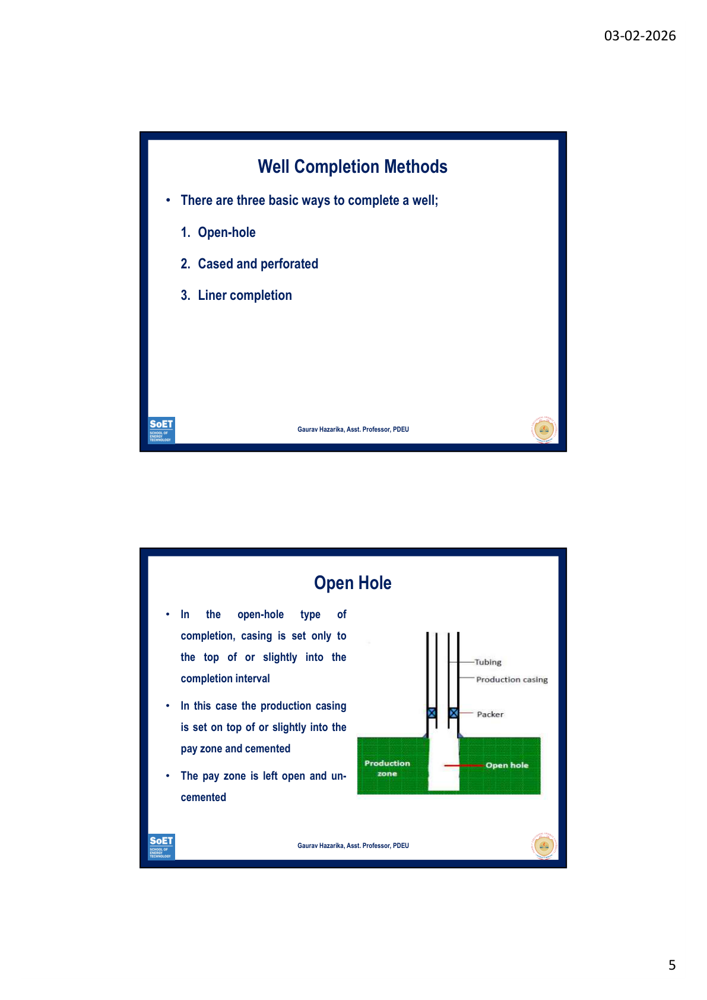
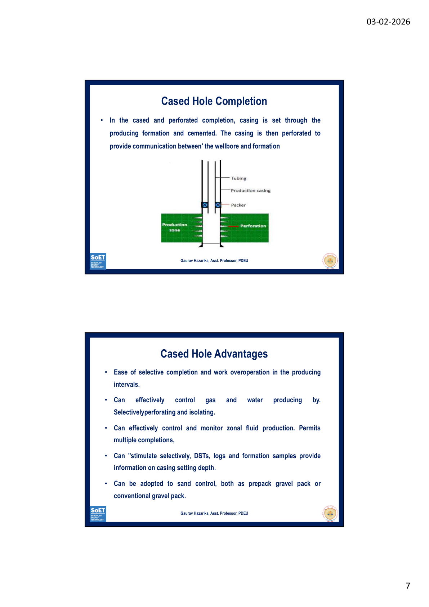
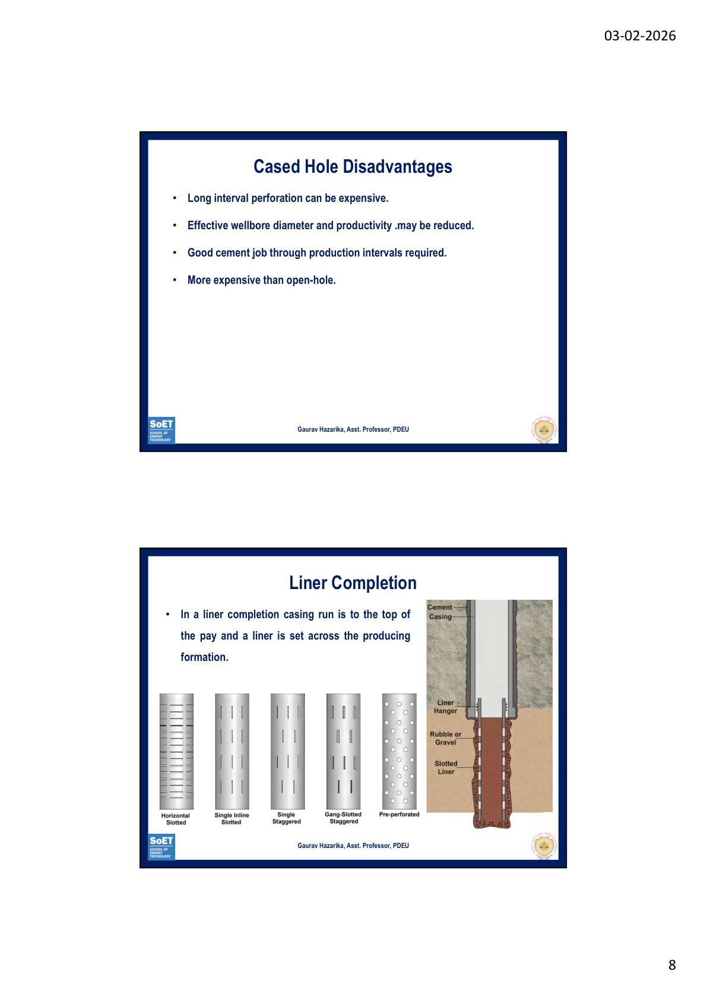
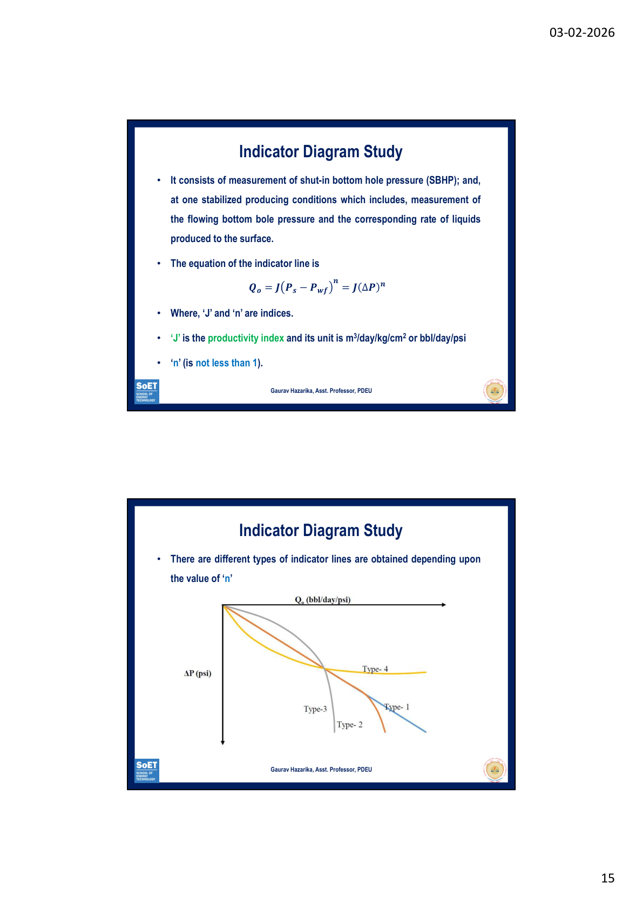
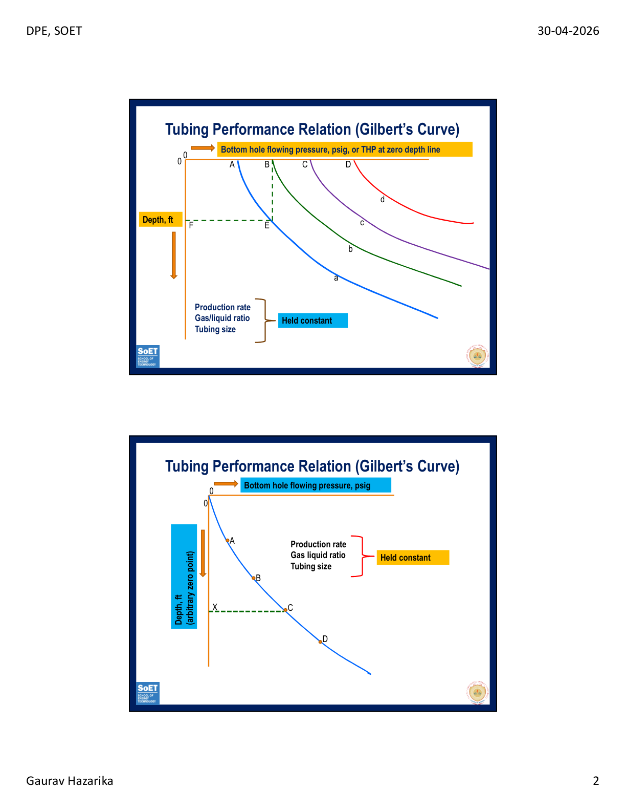
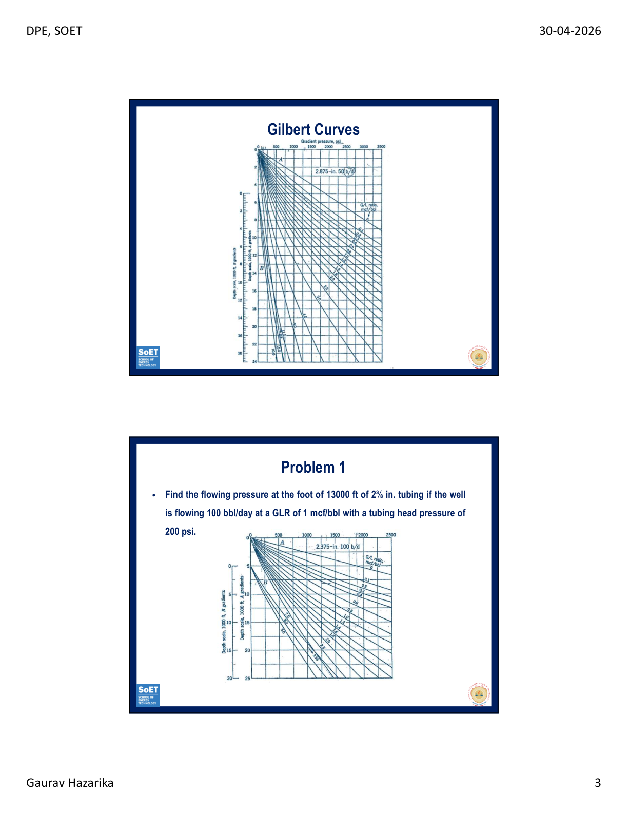

← Back to Theory Dashboard
⚙️
Unit 2
Reservoir Considerations – Completions, PI/IPR, TPR & Formation Damage
📋 10 Exam Questions + Numericals
⏱️ 9 Hours
📌 Topic Flow
Tubulars & Packers
→
Well Completions
→
PI & Indicator Diagrams
→
IPR Numericals
→
Gilbert Curves (TPR)
→
Wellbore Damage & Skin
→
Scale Removal
→
Wax Removal Methods
Q1Role of Tubulars & Packers in Petroleum Production15 Marks
"Discuss about the role of tubulars and packers in petroleum production from subsurface formations."
🔩 Tubulars
Production tubing is a wellbore tubular that forms the conduit for reservoir fluids to flow from wellbore to surface. Typically run inside casing/liner.
Functions of Tubing:
- Provides optimized flow channel for maximum efficient production rate
- Isolates casing from high pressure, high temperature, and corrosive fluids
- Essential for well killing, circulation, and workover operations
- Facilitates multiple/commingled completions
- Essential for most artificial lift operations
- Facilitates installation of wireline-operated downhole tools
Design Considerations: Tubing strings are designed considering tension, collapse, and burst loads to prevent mechanical failure and deformation.
🔒 Packers
Production packers provide a means of sealing the tubing string from the casing, preventing communication of fluids between the annulus and tubing.
Uses of Packer (Routine situations):
- Protection of casing from pressure (well and stimulation pressures) and corrosive fluids
- Isolation of casing leaks, squeezed perforations, or multiple producing intervals
- Elimination of inefficient "heading" or "surging"
- Some artificial lift installations
- In conjunction with subsurface safety valves
- To hold kill fluids or treating fluids in casing annulus
Types of Packers
- Retrievable – Run as integral part of tubing string; set mechanically or hydraulically; can be released by pulling/rotating tubing
- Permanent – Once set, can only be removed destructively by milling; set mechanically, hydraulically, or electrically
- Permanent-Retrievable – Combination type

Fig 1: Types of Packers
✨ Bluff Tip
Add: "Packers are sometimes run unnecessarily, resulting in wasted initial investment and high future removal costs — hence their use should be limited to situations where they serve a definite purpose."
Q2 & Q3Well Completion Types – Diagrams, Purpose, Advantages & Disadvantages15 Marks each
"Discuss the various types of completion along with schematic diagrams and their purpose. / Discuss advantages and disadvantages of various completions."
There are three basic ways to complete a well:

Fig 2: Well Completion Methods Overview
🟢 1. Open-Hole Completion
Casing is set only to the top of (or slightly into) the pay zone and cemented. The pay zone is left open and uncemented.
✅ Advantages:
- Full-hole diameter available to flow
- No perforation required or cost
- Hole easily deepened or converted to liner completion
- High productivity maintained when gravel packed for sand control
- Casing set using special techniques to minimize formation damage
- Facilitates ultra-short radius multiple radial completion
⌠Disadvantages:
- No way to regulate fluid flow from/into wellbore
- Cannot effectively control gas or water production
- Casing is set "in the dark" — formation top picked from cuttings only
- Difficult to selectively stimulate producing intervals
- Periodic cleanout required; formation collapse more common
- Requires more rig time when completed
🔵 2. Cased Hole (Cased & Perforated) Completion
Casing is set through the producing formation and cemented. Then perforated to provide communication between wellbore and formation.

Fig 3: Cased & Perforated Completion
✅ Advantages:
- Easy selective completion and workover
- Can effectively control gas and water by selective perforation/isolation
- Permits multiple completions
- Can selectively stimulate; DST logs provide casing depth info
- Adaptable to sand control (gravel packing)
⌠Disadvantages:
- Long interval perforation can be expensive
- Effective wellbore diameter may be reduced
- Good cement job required through production intervals
- More expensive than open-hole
🟣 3. Liner Completion
Casing run to top of pay; a liner is set across the producing formation. Liner may be cemented (perforated) or un-cemented (slotted). Primarily used for sand control.

Fig 4: Liner Completion
Un-cemented Liner ✅:
- Entire pay zone open to wellbore
- No perforation cost
- Adaptable to special sand control methods
Un-cemented Liner âŒ:
- Excessive water/gas difficult to control
- Selective stimulation not possible
Cemented Liner ✅:
- Formation damage minimized
- Selective stimulation possible
- Cleanout avoided in screen liner
Cemented Liner âŒ:
- Diameter across pay minimized
- Good cementation difficult
- Log interpretation critical
- Additional costs (perforating, cementing, rig time)
✨ Bluff Tip
Summarize in one line: "The choice of completion depends on reservoir characteristics, fluid type, formation stability, and economic considerations. Cased & perforated is most versatile; open-hole gives highest productivity; liner is best for sand control."
Q4Indicator Diagrams & Productivity Index15 Marks
"Discuss about the indicator diagrams and state the importance of the individual indicator curves."
🔑 Productivity / Deliverability Test
Tests that physically measure oil, gas, and water produced at a fixed bean/choke size. Provides evidence of well conditions. Two main types: Productivity Index (PI) and Inflow Performance (IPR).
📠Productivity Index Formula
PI = J = Qo / (Ps − Pwf) = Qo / ΔP
Where: Qo = flow rate (STB/day), Ps = shut-in pressure (psi), Pwf = flowing BHP (psi)

Fig 5: Indicator Diagram – Types of Indicator Lines
📊 The Indicator Diagram Equation
Qo = J(Ps − Pwf)n = J × ΔPn
Where 'n' is NOT less than 1.
📈 4 Types of Indicator Curves
- Type 1 (n = 1) – Straight Line: Curve is a straight line through origin. Represents steady-state single-phase flow following Darcy's Law. Most ideal case.
- Type 2 (n < 1) – Convex, then curves: Initially straight, then curves when reservoir pressure drops below bubble point (Pb). Indicates two-phase flow below bubble point. The divergence point ≈ saturation pressure.
- Type 3 (n < 1) – Convex from start: Convex to q-axis from the beginning due to turbulent flow. Occurs when recovery mechanism is solution gas drive or gravity drive (not water drive).
- Type 4 (n > 1) – Concave: Concave to q-axis. Occurs due to errors in measuring BHP and oil rates, or when flow is unsteady. Results from unstabilized flowing conditions.
🔑 n ≠1 indicates deviation from Darcy's Law. Type 2 deviation reveals bubble point pressure; Type 3 indicates turbulence; Type 4 indicates measurement errors or unsteady flow.
✨ Bluff Tip
Mention: "The indicator diagram is also called the 'Well Performance Plot' or 'Bean Study'. The Deliverability Test represents stabilized producing conditions and measures both BHP and surface flow rates simultaneously."
NumericalsPI / IPR Numericals – See Numericals Section15 Marks each
"A productivity test was conducted... Calculate PI, AOF, flow rate at Pwf = 600 psi, Pwf to produce 250 STB/day." | "A well is produced from saturated reservoir... find flow rate at Pwf = 1950, PI, AOF, Plot IPR."
🔑 Key Formulas to Remember
J = Qo / (P̄R − Pwf)
AOF = J × P̄R
q at given Pwf = J × (P̄R − Pwf)
Pwf for given q = P̄R − (q / J)
✨ Exam Note
Sir has explicitly stated: "Note: Values will be changed for exam" — so practice the methodology, not just the numbers!
NumericalsTubing Performance (Gilbert Curves) Numericals – See Numericals Section15 Marks each
"Find flowing pressure at foot of 13000 ft of tubing..." | "Find THP of well with 8000 ft tubing..." | "Will well flow at desired rate?"
âš™ï¸ Gilbert's Curve – Concept
Gilbert's approach to vertical two-phase flow is empirical. Based on measured values of tubing-flow pressure losses. The curves are derived from measured values of:
- Tubing depth (ft) | Bottom-hole flowing pressure (psi) | Tubing-head pressure (psi)
- Gross liquid rate (bbl/day) | Gas/liquid ratio (mcf/bbl) | Tubing size

Fig 6: Gilbert's Nomogram/Curves

Fig 7: How to read the Gilbert Curves
📠Methodology for Gilbert Curve Problems
- Identify: tubing size, production rate, GLR, known pressure (THP or BHP), depth
- Enter Gilbert nomogram with tubing size, rate, and GLR held constant
- Find equivalent depth of given pressure on the x-axis (depth = 0 line)
- Add/subtract actual tubing depth to find equivalent depth at tubing shoe
- Read off the BHP or THP from the pressure-distribution curve
Q5Wellbore Damage, Skin Zone & Causes15 Marks
"Discuss about wellbore damage, skin zone (with diagram) and illustrate 5 activities which can lead to wellbore damage."
💧 Wellbore Damage
Invasion of materials such as mud filtrate, cement slurry, or clay particles into the formation during drilling, completion, or workover operations reduces the permeability around the wellbore. This is called Wellbore Damage.
🎯 Skin Zone
- The region of altered permeability around the wellbore
- Extends from a few inches to several feet from the wellbore
- Wells are stimulated (acidizing, fracturing) to increase permeability near wellbore
📊 Skin Factor Interpretation
- s > 0 (Positive Skin) – Permeability reduced; damaged zone; well under-performing
- s = 0 (Zero Skin) – No damage; ideal undamaged well condition
- s < 0 (Negative Skin) – Permeability enhanced (e.g., after fracturing); well over-performing
âš ï¸ 4 Types of Formation Damage Mechanisms
- Mechanical – Physical migration of in-situ fines, solids entrainment
- Chemical – Wettability alterations, chemical reactions with formation fluids
- Biological – Microbes leading to biofilm/scaling
- Thermal – Mineral transformations, dissolution due to temperature changes
🔧 5 Activities Causing Wellbore Damage
- Drilling – Mud invasion into formation, cement intrusion; reduces permeability near wellbore
- Perforation – Layer compaction around perforations, explosive residues blocking flow
- Production – Paraffin & asphaltene deposition, scale deposition in formation/tubing
- Completion/Workover – Introduction of kill fluids and completion fluids that invade the formation
- Water Injection (EOR) – Incompatible injected water causing scale precipitation at formation face
✨ Bluff Tip
Draw a simple wellbore cross-section showing: undamaged zone → skin zone (lower k) → wellbore. Label kd (damaged permeability) vs k (original permeability) and show skin zone extent (rs). This single diagram can secure 5 marks easily.
Q6–Q10Wax & Scale Removal Methods15 Marks each
"Illustrate all Wax Removal Methods / Discuss operational steps for mechanical scrapping / Discuss thermal treatment (with & without packer) / Discuss dispersant treatment for pour point depression."
🧱 Scale Deposition
Scale forms as crystallization/precipitation of minerals from water due to pressure drop, temperature change, mixing of incompatible waters, or exceeding solubility product.
Scale Removal Methods:
- Mechanical – String shot, sonic tools, drilling, reaming, reperforating. Used for chemically inert scales (BaSO₄, SrSO₄)
- Chemical:
- Water-soluble scale (NaCl) → dissolve with fresh water
- Acid-soluble scale (CaCO₃) → dissolve with HCl or Acetic Acid
- Acid-insoluble (FeCO₃, gypsum) → degrease → remove iron scales → convert gypsum to CaCO₃ → dissolve with HCl
ðŸ•¯ï¸ Wax (Paraffin) Removal Methods
Four methods:
1. Mechanical (Scraping) – Case Study: Cambay Basin
- A Butterfly Scraping tool connected above crown valve; lowered to 800m depth via slick line; dummy attached below for auto-pull downward
- During upward movement, scraping tool removes paraffin from inner walls of tubing
- Operations usually done in winter (paraffin deposits more in cold)
- Key Steps: Fit lubricator on crown valve → lower scraper assembly while crown valve closed → open crown valve → lower slowly → pull out slowly → close crown valve → release pressure → remove scraper
- Safety rules: Well must be in flowing condition; no scraping on non-flowing wells or at night; bean/choke must be checked before and after
2. Thermal Method (Hot Oiling/Steaming)
- Hot oil or hot water injected to melt/soften paraffin
- Reverse circulation: steam injected through casing-tubing annulus; production + melted paraffin recovered through tubing
- Without Packer (Annulus Method): Steam applied through annulus → heats outer surface of tubing → conducted inward → softens paraffin → removed during circulation and scrapping. Applicable only when annulus is not packed off.
- With Packer (CTU Method): Coiled Tubing Unit used with hot oil/water. Hot oil pumped through coil tubing; recovered through annulus between CT and tubing. Oil temp: 60–70°C. Tubing BOP must be installed and tested.
3. Solvent Wax Removal
- Solvents like kerosene, xylene, or carbon disulfide (CSâ‚‚) dissolve paraffin
- CSâ‚‚ = universal paraffin solvent but extremely flammable, toxic, and expensive
- Chlorinated hydrocarbons (CClâ‚„) effective but not used in USA (adverse effect on refinery catalysts)
4. Dispersant Treatment (Pour Point Depressant) – Case Study
- Water-soluble dispersants (e.g., Halliburton's Parasperse) disperse paraffin particles; does NOT dissolve paraffin
- More effective if heated to ~120°F; relatively inexpensive and non-flammable (90-98% water)
- Case Study Steps: PPD heated in heater → mixed with solvent (diesel) in 1:1 ratio in PPD tank → agitated continuously → compressed → well fluid from heater treater combined with PPD at rate of 7 L/hour via pneumatic pump → PPD depresses pour point of crude → crude stored in 170m³ tank → transported via pipeline 22 km to GGS
✨ Bluff Tip
Structure your answer in a clear table format:
Method | Mechanism | Suitable For | Limitations
This structured approach for a 15-mark question can easily earn 12+ marks even with limited detail per row. Also mention: "The choice of paraffin removal method depends on the wax characteristics, well conditions, and economic considerations."